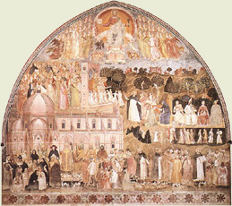

|  |
|---|
[91948] Ordinationes 1259, n. 1 Parisius non petatur licentia legendi theologiam pro aliquo fratre, nec licentiatus incipiat, nec legens dimittat, nisi de consilio magistri si fuerit in provincia Francie, vel de consilio prioris provincialis Francie, si magister ordinis in Francia non fuerit (...).
[91950] Ordinationes 1259, n. 2 quod lectores non occupentur in factis vel negotiis, per que a lectionibus retrahantur.
[91951] Ordinationes 1259, n. 3 Item, quod diligenter inquiratur per priores provinciales de iuvenibus aptis ad studium, qui possint in brevi proficere, et eos in studio promoveant.
[91952] Ordinationes 1259, n. 4 Item, quod talis inquisitio fiat singulis annis per visitatores in singulis conventibus, et referatur capitulo provinciali.
[91953] Ordinationes 1259, n. 5 Item, quod ad studia ordinis generalia non mittantur fratres, nisi qui sunt bene morigerati et apti ad proficiendum.
[91954] Ordinationes 1259, n. 6 Item, quod si in aliqua provincia non possint haberi lectores in omnibus conventibus, provideatur saltem quod fratres et maxime iuvenes non semper remaneant in illis conventibus, sed mittantur ad loca ubi sunt lectores.
[91955] Ordinationes 1259, n. 7 Item, quod si inveniri non possunt lectores sufficientes ad legendum publice, saltem provideatur de aliquibus qui legant privatas lectiones, vel ystorias, vel summam de casibus, vel aliud huiusmodi, ne fratres sint otiosi.
[91956] Ordinationes 1259, n. 8 Item, quod fratribus iuvenibus aptis ad studium parcatur a discursibus et aliis occupationibus, ne a studio retrahantur.
[91957] Ordinationes 1259, n. 9 Item, quod ordinetur in provinciis, que indiguerint, aliquod studium artium vel aliqua, ubi iuvenes instruantur.
[91958] Ordinationes 1259, n. 10 Item, quod fratres, qui remanent a scolis, dure puniantur.
[91959] Ordinationes 1259, n. 11 Item, quod fratres tempore lectionis non occupentur in missis celebrandis, vel aliis huiusmodi nec vadant in villam, nisi pro magna necessitate.
[91960] Ordinationes 1259, n. 12 Item, quod etiam priores vadant ad scholas, sicut ceteri fratres, quando commode poterunt.
[91961] Ordinationes 1259, n. 13 Item, quod lectores vacantes vadant ad scolas et praecipue ad disputationem.
[91962] Ordinationes 1259, n. 14 Item, quod non fiant lectores vel predicatores vel confessores, nisi sint sufficientes, ita quod possint sine periculo notabili huiusmodi officia exercere.
[91963] Ordinationes 1259, n. 15 Item, quod priores et visitatores et magistri fratrum sint solliciti diligenter inquirere, qualiter fratres et precipue iuvenes circa studium occupentur, et qualiter in studio proficiunt et puniant negligentes.
[91964] Ordinationes 1259, n. 16 Item, quod lectores, quantumcumque fieri poterit, continuent lectiones suas.
[91965] Ordinationes 1259, n. 17 Item, quod visitatores singulis annis diligenter inquirant de lectoribus, quantum legant in anno et quot questiones disputaverint ac etiam determinaverint, et quot conventus sue visitationis careant lectoribus, et quod quidquid circa hoc invenerint, referant capitulo provinciali, et etiam defectus notabiliores qui circa hoc invenerint; prior provincialis et diffinitores referant postmodum capitulo generali.
[91966] Ordinationes 1259, n. 18 Item, quod in singulis provinciis singulis annis in quolibet provinciali capitulo ordinetur, qualiter provideatur studentibus sue provincie missis ad quecumque studia generalia.
[91967] Ordinationes 1259, n. 19 Item, visitatores diligenter inquirant qualiter studentibus provideatur, et referant defectus notabiles capitulo provinciali, per quod efficax remedium apponatur.
[91968] Ordinationes 1259, n. 20 Item, provideatur quod quilibet lector, tenens aliquod studium solempne, habeat bacellarium, qui legat sub eo.
[91969] Ordinationes 1259, n. 21 Item, quod fratres portent ad scolas libros qui leguntur in scola, si habent, et non alios.
[91970] Ordinationes 1259, n. 22 Item, quod in quolibet conventu, ubi est lector, instituatur aliquis frater qui diligenter repetat, dummodo sit in conventu aliquis sufficiens.
[91971] Ordinationes 1259, n. 23 Item, quod fiant repetitiones de questionibus et collationes de questionibus semel in septimana, ubi hoc commode poterit observari.